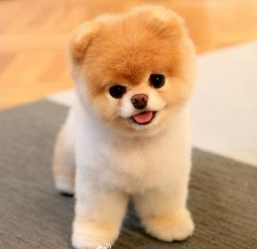

博美犬
外表
重量在1.4-3.2公斤，博美犬是最嬌小的北方品種。博美犬的頭部為契形，使它看起來有著狐貍臉；牠耳朵小而尖，作為血統特徵的尾巴必須豎起，而其上蓬鬆的毛平展在背上。博美的被毛是其榮耀，分為兩層內層被毛和上層被毛——前者為柔軟厚毛茸茸的，後者則為長毛直且閃耀的覆蓋全身，在天氣暖活時博美會掉內層被毛。
性格
該犬性格平和，活潑、順從、適應性強，適合作伴侶犬。性格上，友善開朗，優雅美麗。
歷史
博美原本源自冰島和拉普蘭的雪橇犬，最終被帶到歐陸，被德國人改進了其被毛並且小型化品種以適應城市生活，但當抵達英格蘭時其先祖依舊為20英磅或以上的體型。
歸功於英格蘭育種者們藉著試誤法和Mendelian的理論的嘗試，此犬種進一步縮減了體型和發展出許多花色。今日的博美為小型犬是選擇性育種的結果，但其品種仍然保有勇敢的性情和厚的毛皮寒帶犬的典型特徵。
飼養注意事項
略帶神經質，一點聲響便會吠叫
較無自信，極需毛爸媽的陪伴
骨頭較細，需避免從高處往下跳或撞擊到頭部
關節容易脫臼
